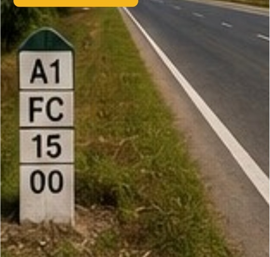

Selected construction and infrastructure work, presented with clear work-stage photography. Current and completed views are labelled separately so the project status is easy to understand.
INFRASTRUCTURE WORK
Fibre Cable Work
Optical fibre corridor work including trenching, duct installation, cable laying and restoration along Indian road corridors.
WORK PROFILE
ONGOING WORK

COMPLETED / RESTORED
SCOPEOFC / Ducting / Trenching
LOCATION CONTEXTIndian Road Corridor
WORK STAGESInstallation → Restoration
Photography shown for work-stage presentation. Project-specific client, contract value, exact location and completion dates should be added only when verified.